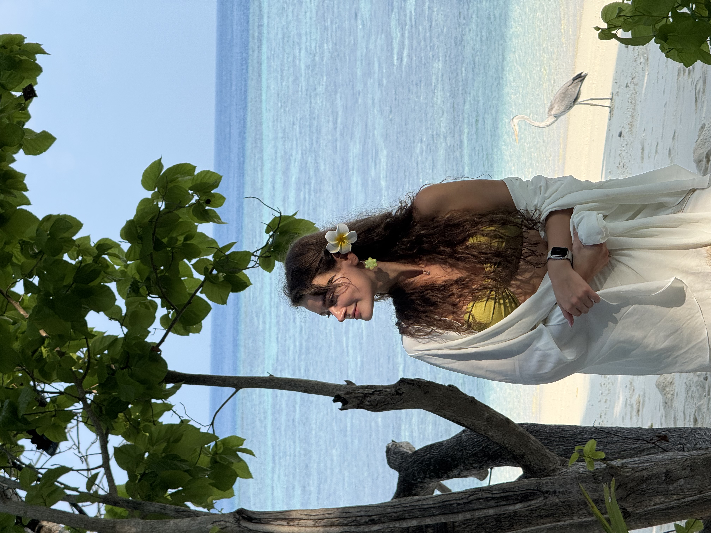
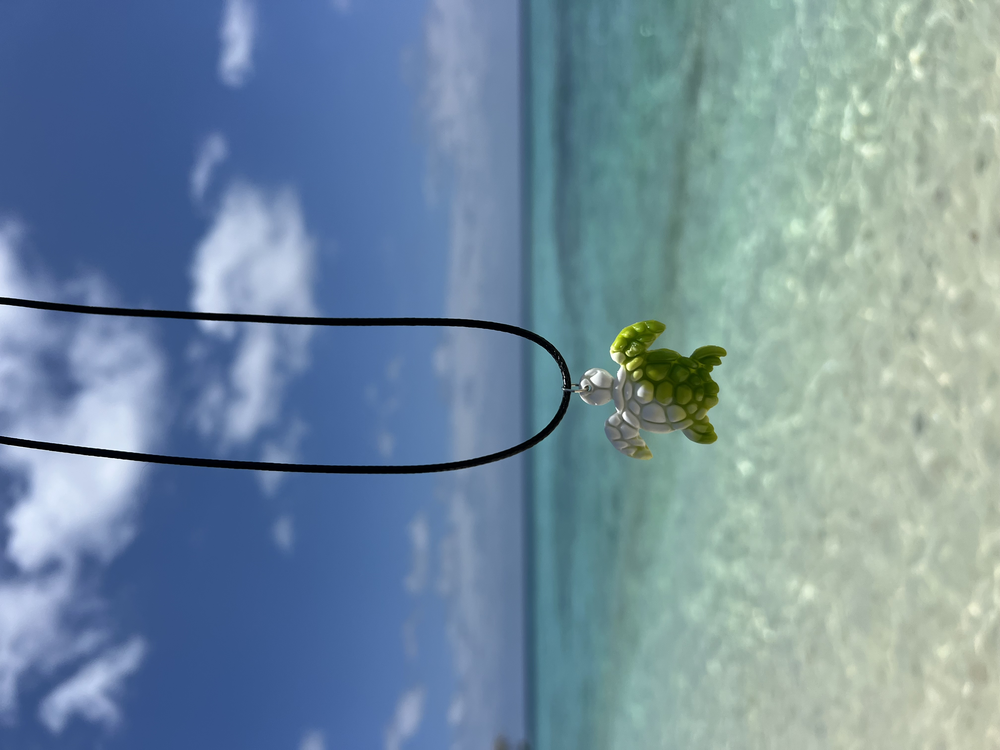

The Maldives is often described as paradise, turquoise lagoons, white sand beaches, and thriving coral reefs. But behind the postcard images, small islands face very real challenges with waste, freshwater access, and fragile ecosystems.
As a visitor, your choices matter more than you might think. Here are simple, practical ways tourists can reduce their impact while visiting the Maldives, particularly when staying on local islands, which often lack the infrastructure and funding available to resort islands for waste removal and recycling.
Bring as Little Plastic as Possible
The most effective way to reduce your plastic impact in Maldives is simple: don't bring it in.
- Avoid packing single-use plastic when packing
- Remove excess packaging before travelling
- Choose solid toiletries instead of liquid bottles - think shampoo bars, soap bars, toothpaste tabs
- Decant large products into reusable containers rather than buying travel-sized plastics
- Skip plastic-wrapped snacks where possible
Every item you don't bring is one less item that needs to be managed on a small island with limited waste capacity.

If You Bring It In, Take It Back Out
Many everyday travel items such as sunscreen, insect repellent, skincare and cosmetics, come packaged in plastic. In the Maldives, these containers are unlikely to be recycled and often end up being burned or disposed of improperly.
Taking empty plastic packaging home increases the chances it will be recycled through more established waste systems and reduces the burden placed on island communities already under environmental strain.
Reusable Water Bottles
On many resort islands, drinking water is produced on-site through desalination plants, and plastic water bottles are uncommon. On local islands, however, drinking water often comes from rainwater, water filtration systems or plastic water bottles, making plastic-free options harder to find for visitors.
Bringing a reusable, insulated water bottle can reduce your reliance on single-use plastic bottles while also keeping water cool in the tropical heat.
What you can do while you're here: Ask your hotel or guesthouse where bottle refills may be available. Even if refilling isn't an option, asking helps signal demand and encourages them to look into this sustainable alternative.
- Ask your hotel or guesthouse where bottle refills may be available
- Thank or give positive feedback to places that allow refills
- Consider bringing a portable water filter or purifier
- If bottled water is unavoidable, buy a 5-litre jug rather than multiple small bottles
PET drinking water bottles are currently the most recycled plastic type in the Maldives, which is a positive but reducing overall consumption remains the most effective solution.
Avoid Buying Plastic While You're Here
Plastic is widely used because alternatives are limited and many goods imported are already packaged in plastic.
You can help by:
- Refusing plastic bags, straws or cutlery
- Avoiding mass-produced, imported souvenirs
- Choosing unpackaged or minimally packaged items
- Buying in bulk where possible
Small refusals add up quickly on small islands.


Supporting local, sustainable choices
Buy Local Products
Choosing locally made products, food and snacks, instead of mass-produced imported items, often means less plastic packaging overall.
A must try is Addu bondi, a local sweet treat made from grated coconut and wrapped in dried banana leaves. It also supports local livelihoods and encourages more sustainable community-based economies.
Support Local Organisations
Plastic waste is a long-term challenge in the Maldives, and many local organisations and community groups such as our project are working with limited resources to manage, reduce, and repurpose it. Tourists can support these efforts in meaningful ways.
- Join or support beach clean-ups: Participating helps remove plastic already in the environment and highlights how much waste arrives from the ocean and tourism.
- Donate to recycling and waste-reduction initiatives
- Support social enterprises working with plastic waste - we don't just mean our project! LANALA Swims is a great example of a local swimwear brand using recycled fabric from plastic bottles.
- Raise awareness responsibly - share what you learn while visiting, talk to other travellers about plastic waste challenges, support sustainable initiatives on social media, and encourage responsible travel choices without blaming or shaming.

A Final Thought — Bring Less, Use Less, Take it Home
A study from 2018–2019 found that tourists in the Maldives generate approximately 3.5 kg of waste per person per day, compared to around 0.8–1.7 kg per day per resident of local islands depending on location (UNESCAP, 2021). That's two to four times more waste per tourist, per day.
While this data accounts for all waste types (not just plastic) and is now slightly dated, it clearly illustrates the disproportionate impact tourism can have on small island nations.
The Maldives is made up of tiny islands with limited space and resources. What may feel like a small action to a visitor can have a lasting impact on a community.
By travelling consciously, bringing less, wasting less, and taking responsibility for what you bring, you help protect the very beauty that brought you here.
Paradise isn't disposable. Let's keep it that way.
Reference
UNESCAP (2021). Maldives National Waste Accounts 2018 and 2019. View Report →